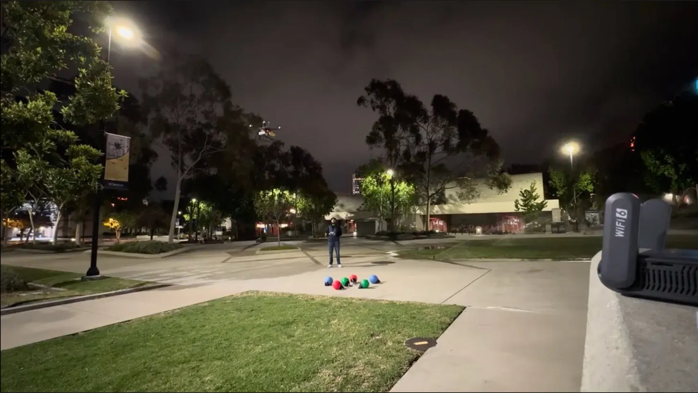
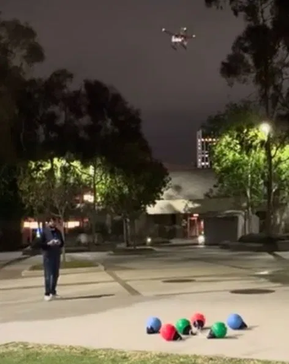

ML · Controls · Autonomous Systems
Selected Work
Robotics · Edge Compute · 2026
Edge-compute perception pipeline on a custom quadrotor for Maritime RobotX 2026. Detects colored buoys from the air, maps pixel detections to GPS coordinates via monocular ray projection, and transmits structured payloads to a surface vessel over MAVLink UDP. Runs entirely on a Jetson Orin Nano.
mAP50 0.967 · Precision 0.944 · F1 0.960 · <50ms latency
YOLO11n + HSV · 681 labeled images · Live flight demo: 6 buoys


Perception · Research · 2025
End-to-end CARLA pipeline from RGB camera to YOLOv8 to ByteTrack, evaluated across 4,500 frames. Measured how confidence thresholds propagate into the tracker: raising detection confidence from 0.40 to 0.65 cut active tracks by 60% while short-lived ID churn rose 38%.
~4,500 frames · ~2k trajectories · CV / Kalman / GRU benchmarked
ML · Robustness · 2026
Trained DeepLabV3-ResNet50 on Cityscapes and evaluated under blur, noise, brightness, and JPEG corruption. Built a lightweight post-hoc repair pipeline that selectively fixes low-confidence regions. No retraining.
+0.04 mIoU on corrupted regions · 12.75% pixel error reduction
Control Systems · 2026
Two controllers for a single-track bicycle model at 25 m/s. Routh-Hurwitz analysis showed proportional-only control is conditionally stable and essentially undamped. PID loop-shaping at 12 rad/s achieved 66° phase margin and zero steady-state lane error. Lead-lag root locus matched speed with 3.7mm residual offset.
PM 66° · Rise time 94ms · BW 17.6 rad/s · <6cm peak lane error
Optimization · Internship · 2025
Built at FastFlyrr. Uses time-expanded conflict graphs and greedy Maximum Weighted Independent Set to generate conflict-free flight plans under weather, delay, and vertiport constraints. Multi-refuel routing with global consistency checks that eliminate infeasible plans before output.
Agentic AI · Internship · 2026
Built at NeuralSeek. Combines rule-based electrical reasoning with AI-driven constraint checking to catch unsafe circuit configurations before physical prototyping. Flags issues and suggests fixes in one pass.
Experience
RobotX Navigation Team, UCSD
UAV perception pipeline for Maritime RobotX 2026 (Singapore, Nov 2026).
Undergraduate Researcher, Prof. Poveda
Multi-agent game-theoretic simulations; model-free Nash equilibrium seeking under adversarial perturbations.
Agentic AI Intern, NeuralSeek
Built FaultWise.
AI Navigators Intern, FastFlyrr
Built the UAM route scheduler.
Research Apprentice, Qualcomm Institute
5G transceiver prototype, demonstrated at G.E.A.R. 2025 Symposium.
Mechatronics Team, TritonBot FC (RoboCup SSL)
LT3751 flyback transformer systems for solenoid kicking on autonomous robots.
I build systems that work in the physical world: UAVs, controllers, perception pipelines. From Kuala Lumpur. At UCSD studying ECE (ML and Controls depth), graduating March 2027. Before this: founded a STEM non-profit in KL, won IEEE UCSD 2024 Quarterly Projects for a circadian-rhythm-based RGB clock.
Python · C++ · MATLAB · PyTorch · OpenCV · ROS2 · YOLO · Jetson · Git